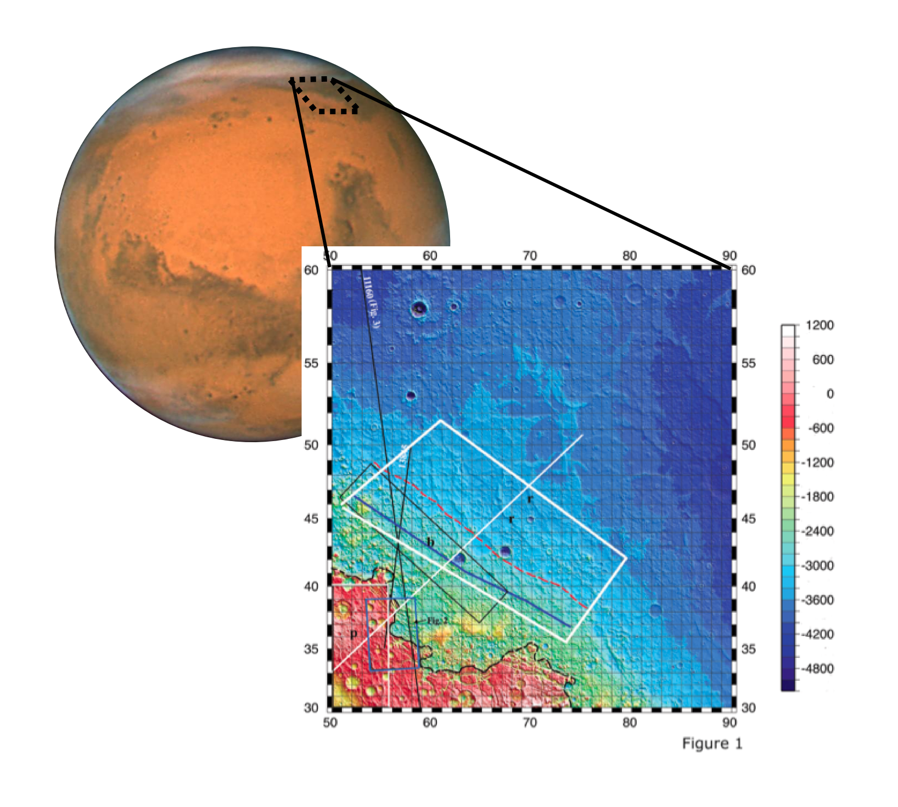

Astromusic: An astronaut, en route to Mars, decides to play a violin while taking a space walk. Although impractical for many reasons (including the lack of a gaseous medium to permit sound wave propagation, the damage that vacuum pressures would inflict on a wooden instrument, the excessive and unnecessary radiation exposure for the astronaut, the difficulty of performing a violin through a thick space suit, etc.), the image does depict two important points. First, as a society, we are more and more focused on reaching Mars with the possibility of colonizing it. Second, as humans, any prolonged expedition will require that we bring a cultural or artistic outlet.
Research - Mars
Martian faults and gullies
SHAllow RADar + radargrams
One of the sensors on NASA's Mars Reconnaissance Orbiter is a SHAllow RADar sounder (SHARAD). As depicted in the top image, this device sends out a radio chirp and then listens for the echoes from the surface and sub-surface structures. The time between the chirp and the echo indicate the distance between the satellite and the detected object. As shown in the second image, a radargram can be constructed by repeating the chirp / echo process.
Ismenius region of Mars
A portion of the Ismenius region of Mars where a fault may lie dormant. The inset shows the surface elevation which highlight the dichotomy between the southern and norther regions of Mars. The solid blue and dashed red lines next to the "b" marker indicate places where proposed fault may be.
Gullies on Mars

A flow on the Martian surface leaves a gully, a depression where dust and material have been swept away. These gullies can have long winding paths and can take place with shallow inclinations indicating that these eroded gullies were formed by water. Image from Science magazine.
NASA's Jet Propulsion Laboratory
During my freshman year in undergrad, I was accepted to Caltech's Summer Undergraduate Research Fellowship (SURF) program. For 10 weeks, I lived at Caltech while commuting to the Jet Propulsion Laboratory to work with Dr. Suzanne Smrekar on exogeology. My task was to work on data from the Mars Reconnaisance Orbiter's SHARAD sensor (see figure 1 for the operation) to study two types of geological features: subterranean faults and gullies.
Why study Martian geology?
Mars has become a focal point in our cultural vision for the future, in part because studying a new planet offers insights into discovering life beyond Earth but also because colonizing Mars appear to be the next major step in exploring the universe. In both contexts, the search for water on the Martian surface is imperative. Because water has provided an environment for life to develop on Earth, liquid water on Mars is a hopeful sign that life could develop there too. Further, if we intend to colonize Mars, the knowledge of a stable water source will allow us to travel there with less baggage, thereby increasing our odds of making it safely.
There is another reason to be interested in Martian geology, and it's more than skin deep. The northern and southern surfaces of Mars have significantly different geological features, particularly when seen in relief, and one of the deeper hypotheses (called the Endogenic Origin Hypothesis) stipulate that this dichotomy is a consequence of tectonic activity in the early formation of the planet which would have broken up the crust like a cracked egg. Verifying this theory requires discovering geographic features like one or more of the cracks in the crust (i.e. fault lines on Mars). Finding a fault line would have deeper implication; for instance, identifying tectonic plates and monitoring fault activity would indicate the seismological activity still present on Mars. With evidence that the Martian core has cooled much faster than earth, we would expect the seismic nature of Mars to be different than Earth.
Search for faults
Could Mars be a planet without Marsquakes? Would we need structurally re-inforced structures if we travel there? The answer to these questions lie in what's beneath the surface. Earth has earthquakes partially because the crust is moved by flows in the mantle. Because these flows are inhomogeneous, the crust has been broken into tectonic plates which slide past each other. This sliding/slipping behavior results in rubbing, upheavals, and earthquakes. If Mars used to look like this but has cooled, Marsquakes may be a thing of the past.
To find out if this is true, then there should be evidence of fault lines that have ceased moving. Dr. Smrekar's previous work indicates that the Ismenius region of Mars (see figure 2) has many surface features consistent with the presence of a sub-surface fault. However, direct measurement of a fault requires penetrating through the surface and looking at the layers of rock underneath, a job that, in principle, SHARAD is well suited for.
My role was the data anlysis, looking through radargrams searching for evidence of subterranean fault-like features. I separated out the SHARAD radargrams that were taken near the Ismenius region, where each column of the radargram was taken, and where the pertinent feature were in each radargram. Of the nearly 30 MRO flybys with SHARAD data, several showed salient features, but precise nature of the feature was not clear (as in figure 2). Since my work, the data has undergone a noise-reduction process which removes surface clutter in the radargrams (the reason that the surface echo is fuzzy) and has been published stating that "it is plausible that the reflections could represent fault planes".
Martian gullies
Finding water on Mars has been a huge accomplishment, and I hope that some of my work during the summer of 2007 contributed to the finding. But the discovery of liquid water on the Martian surface doesn't guarantee the long term stable water sources that could give rise to life or support future human missions to Mars. The hopeful discovery of stable bodies of water may come with the answer to the question, "Where does the water in the Martian gullies come from?"
There are many ideas about gully formation. Some of the gullies are suspected to come from the seasonal formation of glaciers. When the glaciers melt in the warm season, the water runs off and makes the gullies we observe. There are other mechanisms that could give rise to these gullies, including subterranean aquifers.
When variations in the environment either cause too much pressure or too much water in the aquifers, the water can flow onto the surface, thereby making gullies. Since these aquifers are subterranean, they would largely be protected from the environment allowing them to be stable. Further, since these aquifers are subterranean, we would not be able to find them by looking at just the surface.
My role was to look through the SHARAD data archives at these gully sites for evidence of subterranean feature coincident with the gully location and then plan future SHARAD data collection campaigns for the as-of-yet unstudied gullies. Since the frequency SHARAD emits is coincident with a resonance frequency for the H2O molecule, underground water or ice appears with a strong signal. Some of these gullies did exhibit features, possibly from subterranean sources. Further work, conducted with recently developed ground clutter simulations, has shown that of all the gullies, very few show subterranean features consistent with either an aquifer or subterranean ice.